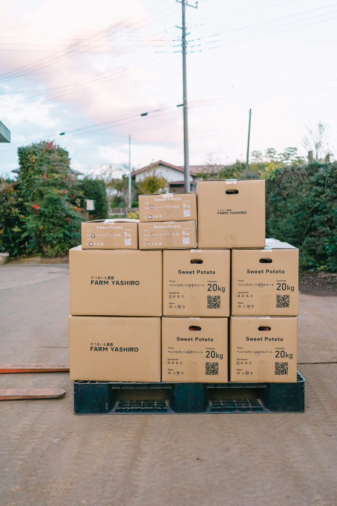

RECRUIT / 採用情報
一緒に働く
仲間を募集しています！
FARM YASHIRO では、スタッフを募集しています。短期・長期を問わず、一緒に美味しいさつまいもをつくる方をお待ちしています。
 植付け
植付け
収穫
募集要項
「さつまいもが好き」「農業に挑戦してみたい」「将来、農家を目指したい」——そんな方を歓迎します。
EMPLOYMENT
雇用形態
アルバイト・パート
※社員登用あり
WORK
仕事内容
さつまいもの植付け・収穫・選別・箱詰め など農作業全般
HOURS
勤務時間
8:00〜17:00
※残業基本なし（繁忙期に30分ほどお願いする場合があります）
DAYS
勤務日数
週休2日制
収穫期や繁忙期によって異なります
※応相談
SALARY
給与
時給制 1,140円(昇給あり)
REQUIREMENTS
応募資格
- 普通自動車運転免許 必須（できればMT所持）
- フォークリフト免許をお持ちの方優遇
- 学歴不問／未経験歓迎
 選別
選別

箱詰めWELCOME
「さつまいもが好き」
「農業に挑戦してみたい」
「将来、農家を目指したい」
そんな方も大歓迎!!
FARM YASHIRO は、さつまいも品評会で多数の受賞歴があります。私たちと一緒に、さらに美味しいさつまいもづくりを目指しませんか？
ご興味のある方へ
短期・長期を問わず、一緒に働いていただける方を募集しています。
お問い合わせよりお気軽にご連絡ください。
理想とのギャップを感じやすい職業でもございますため、実際に農園にてお仕事体験いただけます。
※観光としての作業体験ではございません。